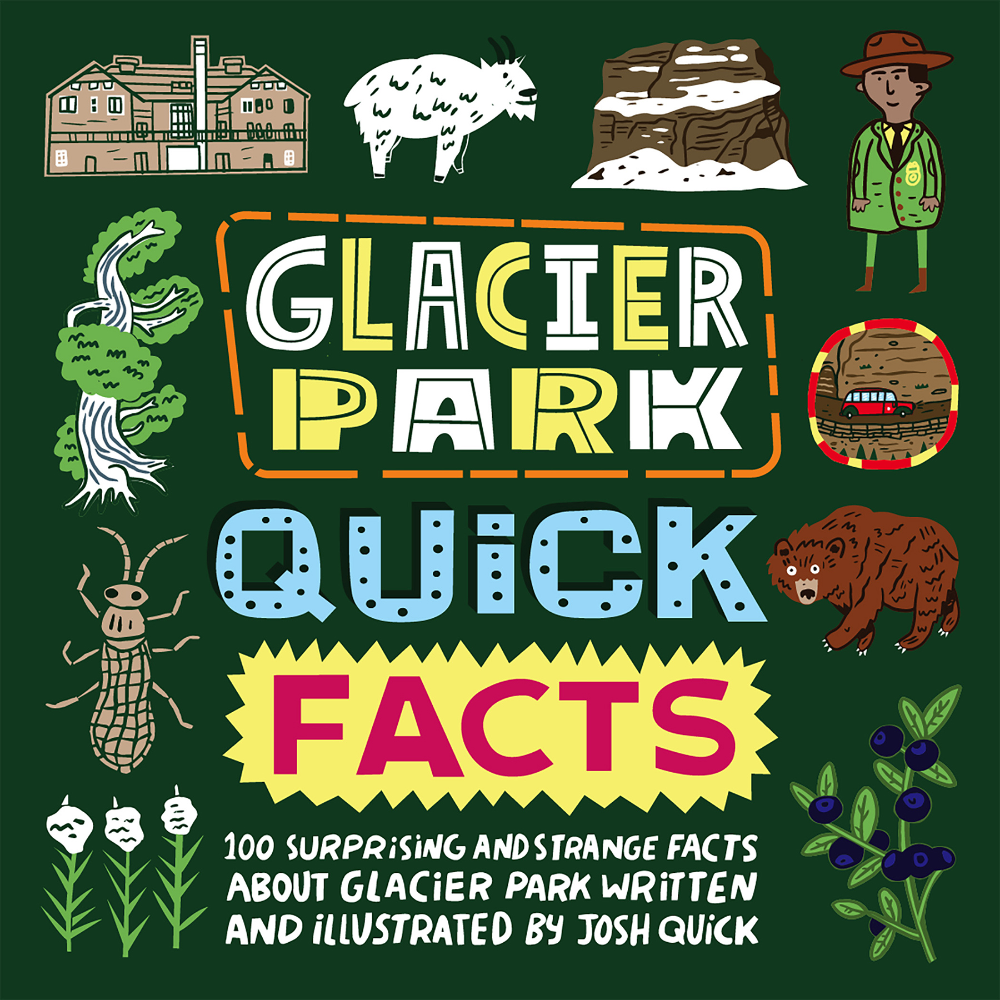
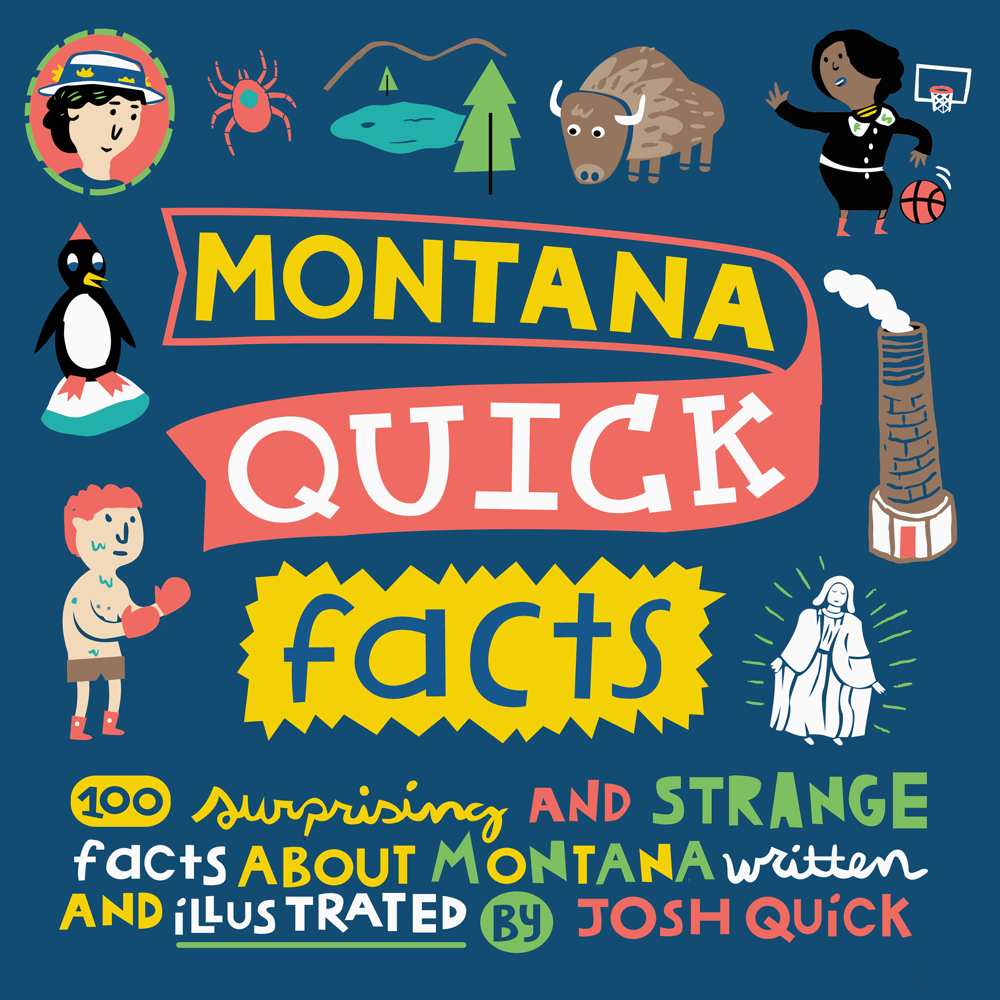
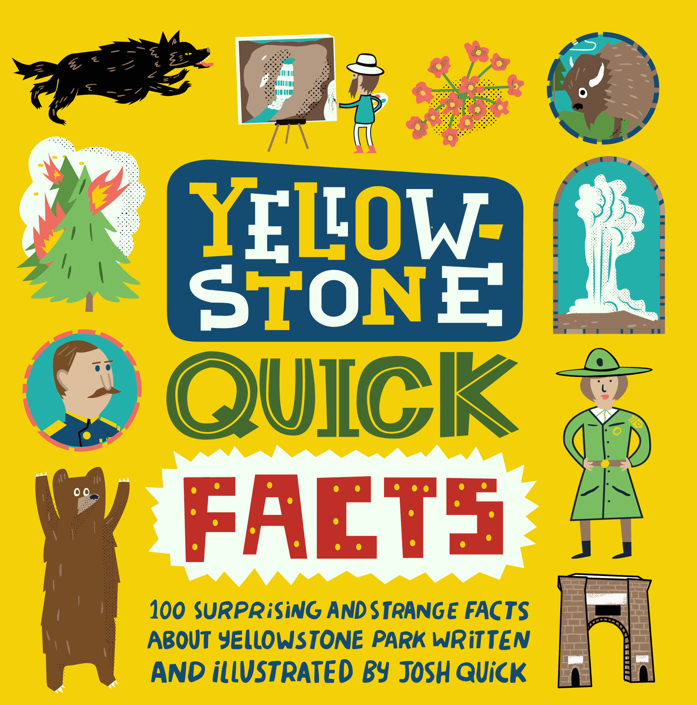

Discover 'Quick Fact Books,' a treasure trove of lesser-known facts about Montana, Glacier Park, and Yellowstone Park. Packed with quirky one-sentence tidbits and delightful illustrations, these books guarantee family enjoyment. Click below to buy wholesale and start selling Quick Fact Books or by a bunch for family and friends. Thanks!


